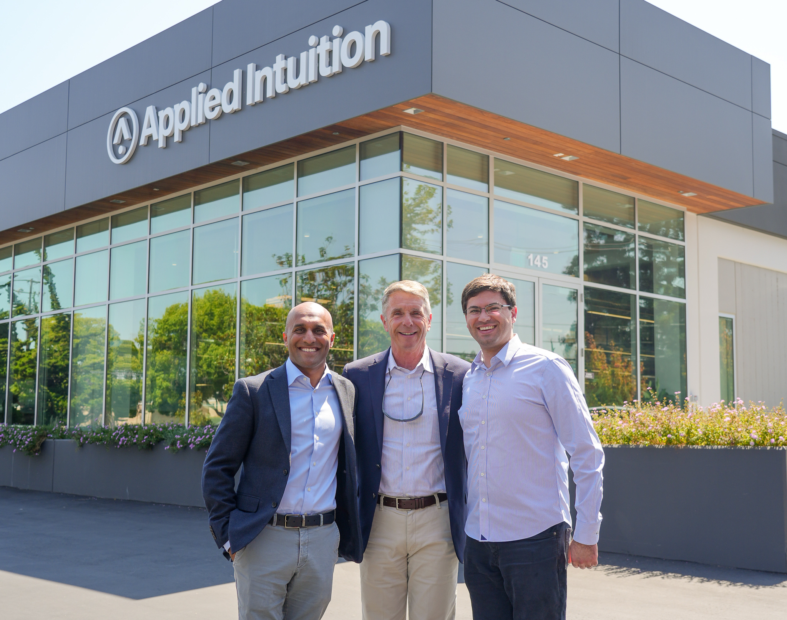

I always get excited to learn about instances of people building great businesses and products. Recently I got to know about Applied Intuition - founded in 2017 - and it’s Founder & CEO Qasar Younis’s approach that helped it reach $15B within a decade.

The origin story
Qasar Younis grew up in a working-class Detroit suburb, started working at McDonald’s at 14, and watched his auto-worker father claw back his dignity by starting a small business. That moment planted a seed: Younis spent the next two decades deliberately collecting experiences — engineering at GM and Bosch, business school, two startups (one fizzled, one sold to Google), Group PM at Google Maps, COO at Y Combinator — all in service of one goal: building the company only he could build.
1. The “Founding Order of Operations”
In 2017, Younis reunited with Peter Ludwig, a Google colleague whose parents lived a quarter mile from his own in Michigan. Together they explored crypto, AR/VR, and autonomy — then caught themselves: they knew cars and software, not voice or blockchain. They picked autonomy, bet that the market would converge eventually, and built horizontal engineering tools so they wouldn’t have to predict which self-driving bet would win.
Younis argues that most founders get the order wrong. His formula is strict: Team → Market → Idea (in that order).
Team First: Don’t find an idea and then look for a co-founder (who then just becomes a “glorified employee”). Find the partner first. Younis advises against “founder speed-dating”; you need a relationship that has evolved over years to survive the inevitable lows.
Market Second: Look for the overlap in your shared Venn diagram of experience. Choose a market that is familiar to you both but, crucially, is exploding in growth. He notes that if a market already has huge competitors or is saturated (like “dentist CRMs”), your product quality matters less because penetration is too hard.
Idea Third: Only after picking the team and market should you zero in on a specific problem. For Applied Intuition, they chose autonomy not because they had a specific product in mind, but because they knew the sector was growing and they had the skills to serve it.
2. Be a “Pickaxe and Shovel” for a Horizontal Market
Instead of trying to predict who would win the self-driving car race (Tesla? Waymo? A trucking company?), Applied Intuition decided to build the infrastructure that everyone would need regardless of who won - based on deep knowledge of the domain that they accrued with their past experience.
They realized there was a lack of software tools for testing autonomous systems.
By building a horizontal product (engineering tools), they could fuel the entire ecosystem rather than betting on a single vertical outcome (like building their own robotaxi).
3. Build Multi-Product from Day One
Contrary to standard advice to focus on one niche thing, Applied Intuition launched multiple products almost immediately (a planning simulator, a perception simulator, and a data logger).
The Insight: The problem space (autonomy) was so massive that a single tool wouldn’t suffice. By breaking their platform into distinct products early, they could charge for them separately and solve different customer pain points simultaneously.
4. Go-to-Market: “Silicon Valley First, Detroit Second”
Younis used a stepping-stone strategy for sales.
Phase 1: Sell to Silicon Valley startups first. These companies move fast, provide quick feedback, and are willing to try new software. This allowed Applied Intuition to debug and perfect the product.
Phase 2: Once the product was polished, they moved to the global giants (the “whales” like GM, VW, Toyota). These companies have deep pockets but are slow and unforgiving of buggy software. You cannot risk your reputation with them on an MVP (Minimum Viable Product).
5. The “Marginal Win” Philosophy
Younis believes you don’t need to be 10x better than the competition to dominate; being incrementally better is enough if you maintain that lead.
Three compounding principles that scaled the company:
Cost-consciousness as culture. Lower salaries, bigger equity. Employees got rich as the stock price grew — not from inflated first offers. The company has preserved every dollar it’s ever raised.
Win by inches. Younis doesn’t ignore competition. In his view, you don’t need a massive lead — just a persistent, incremental one. That’s how compounding works.
Hard work as math. 10 extra hours a week = three extra months a year, creating a velocity that competitors can’t match. Younis has worked seven days a week since he was a teenager.
He also cites the example of coding tools: a tool that is slightly better will eventually become the “juggernaut” because that small advantage compounds over time.
6. Founder Education & Inputs
Younis advises founders to consume “high-quality inputs” outside of the tech echo chamber.
He avoids modern business books (“airport books”) and reads books that are at least 25 years old (e.g., SPQR: A History of Ancient Rome, The History of the Standard Oil Company or Andy Warhol’s autobiography).
“Knowing what good art is makes you a better founder.” The residual knowledge sits in his brain for pattern-matching later.
The logic is that trends fade, but human nature and the fundamentals of building something great (whether art or business) remain constant.
The takeaway. Product-market fit wasn’t a single eureka moment. It was a sequence: find the right co-founder first, pick a familiar market on the verge of exploding, start with customers your own size, and build multi-product muscle early. The market validated Applied Intuition quickly — and it never looked back.